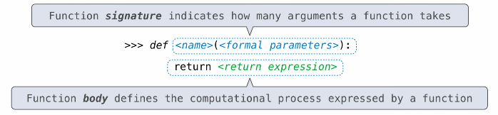

Functions
Table of Contents
1. Defining Functions
While we can use assignment to bind names to values, we can use a function definition to bind names to expressions. The function definition consists of a function signature composed of a name and formal parameters, and a function body that defines the computational process of the function:

For example:
def square(x):
return mul(x, x)
We can also define anonymous functions using lambda expressions.
1.1. Procedure for def Statements
Python also has an execution rule for evaluating function definitions:
- Create a function with the given signature
- Set the body of that function to be everything indented after the first line
- Bind the name to that function in the current frame
1.2. Procedure for Calling User-Defined Functions
- Add a local frame, forming a new environment
- Bind the function's formal parameters to its arguments in that frame
- Execute the body of the function in that new environment
A function's signature is important because it contains all the information needed to create a local frame. The environment we have now is the local frame, followed by the global frame.
1.3. Return Statements
A return statement completes the evaluation of a call expression and provide its value. When a return is reached, we switch back to the previous environment in which the function was called, and now f(x) in that environment has a value. This also implies that we can use return statements to end execution of a function, for example while doing iteration.
Only one return statement is ever executed while executing the body of a function. Functions without an explicit return statement will return None, which is a special value that represents nothing in Python.
2. Pure and Non-Pure Functions
Pure functions only return values. For example, the built-in function abs is a pure function, as in takes in an argument (e.g. -2) and returns a value (e.g. 2).
On the other hand, non-pure functions have side effects. For example, the print function is a non-pure function, as it has the side effect of displaying the output, and returns None. A side effect is not a value; it's anything that happens as a consequence of calling a function. Examples of side effects include I/O, modifying a non-locak variable, or raising errors/exceptions.
3. Higher-Order Functions
Sometimes, we may want to generalize computational processes, not just numbers, over different functions. To do this, we can use higher-order functions, which allow us to pass in functions as a formal parameter, or allow us to use functions as a return value.
For example, we can pass a function in as an argument:
def greet(func):
return func("Hello")
def uppercase(text):
return text.upper()
print(greet(uppercase))
We can also return a function:
def make_adder(n):
def adder(k):
return k + n
return adder
3.1. Function Composition
We can use function composition to combine two different functions together. For example:
def square(x):
return x * x
def triple(x):
return 3 * x
def compose1(f, g):
def h(x):
return f(g(x))
return h
squiple = compose1(square, triple)
Here, compose1(square, triple) composes the functions square and triple together and returns a function that would call square(triple(x)). We can also use this composition directly by, for example, evaluating compose1(square, triple)(3) which would return 81.
3.2. Function Currying
The concept of function currying is where we take a function with several parameters, such as add, and split them into several function calls that each take one parameter, often accomplished using a higher-order function. For example:
def curry(f):
def g(x):
def h(y):
return f(x, y)
return h
return g
m = curry(add)
We now have a function m that does the same thing as add but using currying. Instead of add(2, 3), we can do m(2)(3).
4. Polymorphic Functions
Polymorphic functions are functions that can be executed on many different types of objects or classes. This is often achieved through designing an interface: a specification for a shared set of attributes between different classes such that the same attributes can be looked up even when the classes are different.